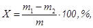
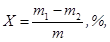

МИНИСТЕРСТВО
МОНТАЖНЫХ И СПЕЦИАЛЬНЫХ
СТРОИТЕЛЬНЫХ РАБОТ СССР
|
СОГЛАСОВАНА |
УТВЕРЖДЕНА |
ИНСТРУКЦИЯ ПО
КОНТРОЛЮ КАЧЕСТВА
ВЗРЫВЧАТЫХ МАТЕРИАЛОВ
ВСН 455-84
Минмонтажспецстрой СССР
Центральное бюро научно-технической информации
Москва - 1985
СОДЕРЖАНИЕ
Настоящая инструкция определяет объем выборки взрывчатых материалов (ВМ) для испытаний, методы испытаний и контролируемые показатели, а также порядок и сроки проведения испытаний ВМ при входном контроле и в процессе хранения применительно к условиям взрывных работ, проводимых специализированными организациями Минмонтажспецстроя СССР.
Инструкция составлена в соответствии с требованиями ГОСТов, ОСТов, ТУ и «Единых правил безопасности при взрывных работах» по контролю качества промышленных ВМ, поступающих с предприятий-изготовителей на склады потребителей.
Инструкция разработана Центральной производственно-экспериментальной специализированной лабораторией треста Союзвзрывпром.
Составитель В. В. Галкин
|
Министерство
монтажных и специальных строительных работ СССР |
Ведомственные строительные нормы |
ВСН 455-84 |
|
Минмонтажспецстрой СССР |
||
|
Инструкция по контролю качества взрывчатых материалов |
Впервые |
1.1. Настоящая инструкция являются обязательной для всех специализированных организаций по производству взрывных работ Минмонтажспецстроя СССР.
1.2. Инструкция предназначена для инженерно-технических работников, заведующих складами ВМ, лаборантов по испытанию ВМ и взрывников, осуществляющих контроль качества ВМ на складах.
1.3. Контроль качества ВМ должен осуществляться:
при поступлении на склад - входной контроль;
в процессе хранения до истечения гарантийного срока;
в процессе хранения по истечении гарантийного срока.
1.5. Сроки проведения входного контроля устанавливаются «Инструкциями о порядке приемки продукции производственно-технического назначения и товаров народного потребления по качеству и количеству».
1.6. Выдача ВМ со оклада для проведения испытаний осуществляется по наряду-накладной формы № 3 «Инструкции о порядке хранения, использования и учета взрывчатых материалов», утвержденной Госгортехнадзором СССР и МВД СССР. В этом случае за руководителя взрывных работ предприятия (руководителя участка взрывных работ) подписывается заведующий складом ВМ. Подписи бухгалтерии не требуется. Расход ВМ, выданных на испытания, записывается в книгу по форме № 1.
1.7. Выдача ВМ для использования на взрывных работах с истекшим гарантийным сроком хранения разрешается только при условии получения положительных результатов их испытаний.
|
Внесена трестом Союзвзрывпром |
Утверждена
Минмонтажспецстроем СССР |
Срок введения
в действие с |
1.8. Результаты контроля качества ВМ (осмотр и испытания) должны оформляться актом по форме № 2 и заноситься в специальный журнал по форме 1 «Единых правил безопасности при взрывных работах».
1.9. При неудовлетворительных результатах испытаний ВМ до истечения их гарантийного срока хранения составляется рекламационный акт, экземпляры которого направляются предприятию-изготовителю, местному органу Госгортехнадзора и одному из институтов по безопасности работ (МакНИИ, ВостНИИ, ВНИИБТГ или ВНИПИВзрывгеофизика). Вопрос о дальнейшем использовании всей партии ВМ решается комиссией с участием представителя предприятия-изготовителя.
1.10. Уничтожение пришедших в негодность ВМ должно осуществляться в соответствии с положениями Инструкции по уничтожению взрывчатых материалов, согласованной в установленном порядке.
1.11. Испытания ВМ взрыванием и сжиганием должны производиться на полигоне, расположенном не ближе 200 м от хранилища склада.
Разрешается проводить испытания ВМ взрыванием и сжиганием на специально отведенном месте на карьере или строительной площадке.
1.12. Люди, занятые испытанием ВМ, на время взрывания должны удаляться в укрытие на расстояние не менее 50 м от места взрывания или за пределы опасной зоны. Радиус опасной зоны принимается в соответствии с «Едиными правилами безопасности при взрывных работах».
1.13. Сушка, измельчение, просеивание и наполнение оболочек зарядов, а также оттаивание ВВ, содержащих жидкие нитроэфиры, должны производиться в соответствии с требованиями «Единых правил безопасности при взрывных работах».
1.14. При поступлении на склад ВМ, наименование которого отсутствует в настоящей инструкции, контроль его качества должен производиться в объеме и порядке, установленных ГОСТами, ОСТами или ТУ на данный вид ВМ.
1.15. Перечень применяемых ВМ приведен в приложении.
2.1. Входной контроль.
2.1.1. Внешний вид мешков и состояние их маркировки.
Осмотру подлежат все мешки с ВВ каждой поступившей партии. Проверяются их количество и целостность. На бумажных мешках не должно быть следов подмокания и отслаивания бумаги. ВВ в мешках не должно иметь признаков слеживания - легко разминаться от усилия руки. Горловина наружного мешка должна быть прошита нитками (машинная зашивка) или завязана шпагатом в «чуб». Мешки, завязанные в «чуб», должны быть опломбированы.
На каждом мешке должна быть четкая маркировка, нанесенная типографским способом.
Маркировка должна содержать:
товарный знак предприятия-изготовителя;
наименование ВВ;
номер партии;
месяц и год изготовления;
номер мешка;
массу (нетто), кг;
гарантийный срок хранения, мес.
Мешки, имеющие дефекты, отсортировываются в отдельную партию. В поврежденных мешках проверяются соответствие фактической массы ВВ массе, указанной в маркировке или сопроводительных документах, и полнота детонации ВВ.
2.1.2. Определение полноты детонации ВВ в бумажной оболочке.
От каждой поступившей партии из одного поврежденного мешка сверху алюминиевым совком отбирается около 2 кг ВВ, которое подвергают проверке на полноту детонации в такой последовательности. ВВ при постоянном встряхивании помещают в бумажную гильзу диаметрами 31-32 мм и длиной не менее 160 мм. Патрон с ВВ устанавливают вертикально на грунт, вводят в него детонатор (ЭД-8 или КД-8) не менее чем на 50 мм его длины и производят взрывание.
О полноте детонации судят по наличию углубления в грунте и отсутствию остатков ВВ. Проводят три испытания, при этом отказы или неполная детонация не допускаются.
При отрицательных результатах первичных испытаний отбирают пробу ВВ из целого мешка той же партии и определяют полноту детонации в порядке, изложенном выше, со следующим дополнением. При отрицательных результатах испытаний должны проводиться повторные испытания с удвоенным количеством (6 патронов) ВВ, при этом отказы или неполная детонация не допускаются.
2.2. Контроль качества в процессе хранения до истечения гарантийного срока.
Контроль производится в следующие сроки: для ВВ в бумажной упаковке - не позднее 3 месяцев, а для ВВ в бумажной упаковке с полиэтиленовым мешком-вкладышем - не позднее 6 месяцев со дня поступления ВВ на склад.
2.2.1. Определение полноты детонации.
От каждой хранящейся на складе партии ВВ вскрывается один мешок и сверху алюминиевым совком отбирается около 2 кг ВВ, которое подвергают проверке на полноту детонации в такой последовательности. ВВ при постоянном встряхивании помещают в бумажную гильзу диаметрами 31-32 мм и длиной не менее 160 мм. Патрон с ВВ устанавливают вертикально на грунт, вводят в него детонатор (ЭД-8 или КД-8) не менее чем на 50 мм его длины и производят взрывание.
О полноте детонации судят по наличию углубления в грунте и отсутствию остатков ВВ. Проводят три испытания.
При отрицательных результатах испытаний должны проводиться повторные испытания с удвоенным количеством ВВ. Если и в этой случае произошел отказ или неполная детонация, то ВВ подвергают проверке на содержание влаги и летучих веществ.
2.2.2. Определение содержания влаги и летучих веществ.
Из мешка, из которого отбиралась проба для определения полноты детонации, сверху отбирают около 2 кг ВВ, которое перемешивают, и 20 г ВВ отбирают для определения содержания влаги и летучих веществ.
На лабораторных весах взвешивают 2 стаканчика с притертыми крышками с точностью до четвертого знака. После этого в них ровным слоем помещают навеску ВВ массой около 5 г и вновь взвешивают. Затем крышки снимают, а стаканчики помещают в сушильный шкаф, где сушат при t = 60-65 °С в течение 4 ч. После сушки стаканчики вынимают, закрывают крышками и охлаждают в эксикаторе 30 мин, после чего взвешивают. Массовую долю влаги и летучих веществ определяют по формуле

где m1 и m2 - масса стаканчиков с ВВ соответственно до и после сушки, г;
m - масса навески ВВ, г.
Содержание влаги и летучих веществ должно быть не более 0,5 %.
При содержании влаги и летучих веществ более 0,5 % ВВ подвергают сушке, после чего определяют полноту детонации аналогично п. 2.2.1. При положительных результатах проверки на полноту детонации все ВВ партии перед выдачей для использования на взрывных работах должно подвергаться предварительной сушке.
2.3. Контроль качества по истечении гарантийного срока хранения.
2.3.1. Определение полноты детонации ВВ.
От каждой хранящейся на складе партии вскрывается один мешок, из которого сверху алюминиевым совком отбирается 1 кг ВВ, которое подвергают проверке в порядке, установленном в п. 2.2.1 со следующим дополнением: при наличии хотя бы одного отказа или неполной детонации из того же мешка отбирают еще 1 кг ВВ, которое просушивают до влажности 0,5 %, после чего просушенное ВВ подвергают вновь проверке на полноту детонации. В случае отказа или неполной детонации вся партия ВВ подлежит уничтожению. Если отказа или неполной детонации не получено, то партию ВВ можно применять на взрывных работах только после предварительного просушивания ВВ.
Периодичность проверки по п. 2.3.1 - один раз в 3 месяца.
3.1. Входной контроль.
3.1.1. Внешний вид мешков и состояние их маркировки.
Осмотру подлежат все мешки с ВВ каждой поступившей партии. Проверяются их количество и целостность. На бумажных мешках не должно быть следов подмокания и отслаивания бумаги. Горловина наружного мешка должна бить пришита нитками (машинная зашивка) или завязана шпагатом в «чуб». Мешки, завязанные в «чуб», должны быть опломбированы.
На каждом мешке должна быть четкая маркировка, нанесенная типографским способом.
Маркировка должна содержать:
товарный знак предприятия-изготовителя;
наименование ВВ;
номер партии;
месяц и год изготовления;
номер мешка;
массу (нетто), кг;
гарантийный срок хранения, мес.
Мешки, имеющие дефекты, отсортировываются в отдельную партию. В поврежденных мешках проверяется соответствие фактической массы ВВ массе, указанной в маркировке или сопроводительных документах, и полнота детонации ВВ.
3.1.2. Определение полноты детонации.
От каждой поступившей партии из одного поврежденного мешка сверху алюминиевым совком отбирается не менее 15 кг ВВ, которое подвергают проверке на полноту детонации в бумажной оболочке или стальной трубе.
3.1.2.1. В бумажной оболочке.
ВВ при постоянном встряхивании помещают в бумажную гильзу диаметром не менее 120 мм для гранулитов и 100 мм для остальных ВВ и длиной 500 мм. Заполнение гильзы испытуемым ВВ производят до высоты, равной не более 4/5 высоты гильзы.
В гильзу сверху испытуемого ВВ засыпают 200 г аммонита № 6ЖВ. Допускается вместо засыпки аммонита применять патрон аммонита № 6ЖВ диаметром 50 мм, который должен быть полностью «утоплен» в испытуемом ВВ. Заряд устанавливают вертикально на грунт, вставляют в него детонатор (ЭД-8 или КД-8) на всю его длину и производят взрывание.
О полноте детонации судят по наличию углубления в грунте. Наличие на месте взрыва отдельных частиц селитры и мелких кусочков гильзы не является признаком неполноты детонации.
Проводят три испытания, при этом отказы или неполная детонация не допускаются.
3.1.2.2. В стальной трубе.
Для испытаний применяют трубы стальные бесшовные диаметром 40х(2,5±0,5), длиной 400-500 мм.
Торец трубы с одной стороны заклеивают плотной бумагой, после чего производят ее заполнение ВВ небольшими порциями при постоянном встряхивании. Высота заряда должна быть на 20-25 см ниже верхнего торца трубы. После заполнения трубы верхний ее терец закрывают плотной бумагой и скрепляют шпагатом или изоляционной лентой. В бумаге в верхнем торце трубы делается отверстие под патрон аммонита № 6ЖВ, который с погруженным в него детонатором (ЭД-8 или КД-8) не менее чем на 50 мм его длины полностью «утопляют» в заряде испытуемого ВВ.
Готовый заряд укладывают горизонтально в щели или естественной выемке в грунте и производят взрывание. Для предотвращения разлета осколков необходимо предусматривать меры в соответствии с «Едиными правилами безопасности при взрывных работах». Проводят три испытания. О полноте детонации судят по углублению в грунте и разрыву трубы на крупные осколки. Наличие на месте взрыва отдельных гранул ВВ не является признаком неполноты детонации.
3.2. Контроль качества ВВ в процессе хранения до истечения гарантийного срока производить не требуется, за исключением случаев, предусмотренных в п. 1.4 Общих положений.
3.3. Контроль качества по истечении гарантийного срока хранения.
3.3.1. Определение полноты детонации.
От каждой хранящейся на окладе партии ВВ вскрывается один мешок, из которого сверху алюминиевым совком отбирается не менее 15 кг ВВ, которое подвергают проверке на полноту детонации в порядке, установленном в п. 3.1.2 со следующим дополнением. В случае отказа или неполной детонации отбирается еще 15 кг ВВ, которое просушивают до влажности не более 1,5 % для граммонита 30/70, гранулотола и алюмотола и 0,5-0,7 % для остальных ВВ.
После просушивания ВВ вновь подвергают проверке на полноту детонации. В случае отказа или неполной детонации партия ВВ подложит уничтожению. Если отказов или неполной детонации не произошло, то ВВ может быть использовано на взрывных работах только после предварительного просушивания.
Периодичность проверки по п. 3.3.1 для алюмотола и гранулотола составляет один раз в 6 месяцев, для остальных ВВ - один раз в 3 месяца.
4.1. Входной контроль.
4.1.1. Внешний вид мешков и состояние их маркировки.
Осмотру подлежат все мешки с ВВ каждой поступившей партии.
Проверяется их количество и целостность. На бумажных мешках не должно быть следов подмокания и отслаивания бумаги. Горловина наружного мешка должна быть прошита нитками (машинная зашивка) или завязана шпагатом в «чуб». Мешки, завязанные в «чуб», должны быть опломбированы.
На каждом мешке должна быть четкая маркировка, нанесенная типографским способом.
Маркировка должна содержать:
товарный знак предприятия-изготовителя;
наименование ВВ;
номер партии;
месяц и год изготовления;
номер мешка;
массу (нетто), кг;
гарантийный срок хранения, мес.
Мешки, имеющие дефекты, отсортировываются в отдельную партию. В поврежденных мешках проверяется соответствие фактической массы ВВ массе, указанной в маркировке или сопроводительных документах, и полнота детонации ВВ.
4.1.2. Определение полноты детонации.
От каждой поступившей партии из одного поврежденного мешка сверху алюминиевым совком отбирается не менее 15 кг ВВ, которое подвергают проверке на полноту детонации в бумажной оболочке или стальной трубе.
ВВ при постоянном встряхивании помещают в бумажную гильзу диаметром не менее 120 мм для АС-8 и М и 150 мм для АС-4 и С-2. Длина гильзы 600 мм. Заполнение гильзы испытуемым ВВ производят до высоты, равной не более 4/5 высоты гильзы.
В гильзу сверху испытуемого ВВ засыпают 200 г аммонита № 6ЖВ. Допускается вместо засыпки аммонита применять патрон аммонита № 6ЖВ диаметрами 32-50 мм, который должен быть полностью «утоплен» в испытуемом ВВ. Заряд устанавливают вертикально на грунт, вставляют в него детонатор (ЭД-8 или КД-8) на всю его длину и производят взрывание.
О полноте детонации судят по наличию углубления в грунте. Наличие на месте взрыва отдельных частиц селитры и мелких кусочков гильзы не является признаком неполноты детонации.
Проводят три испытания, при этом отказы или неполная детонация не допускаются.
Для испытаний применяются трубы стальные бесшовные диаметром 40х(2,5±0,5), длиной 400-500 мм.
Торец трубы с одной стороны заклеивают плотной бумагой, после чего производят ее заполнение ВВ небольшими порциями при постоянном встряхивании. Высота заряда должна быть на 20-25 см ниже верхнего торца трубы. После заполнения трубы верхний ее торец закрывают плотной бумагой и скрепляют шпагатом или изоляционной лентой. В бумаге в верхнем торце трубы делается отверстие под патрон аммонита № 6ЖВ, который с погруженным в него детонатором (ЭД-8 или КЦ-8) не менее чем на 50 мм его длины полностью «утопляют» в заряде испытуемого ВВ.
Готовый заряд укладывают горизонтально в щели или естественной выемке в грунте и производят взрывание. Для предотвращения разлета осколков необходимо предусматривать меры в соответствии с «Едиными правилами безопасности при взрывных работах». Проводят три испытания. О полноте детонации судят по углублению в грунте и разрыву трубы на крупные осколки. Наличие на месте взрыва отдельных гранул ВВ не является признаком неполноты детонации.
4.2. Контроль качества ВВ в процессе хранения до истечения гарантийного срока.
Контроль производится не позднее 3 месяцев со дня поступления ВВ на склад.
4.2.1. Определение содержания влаги и летучих веществ.
От каждой поступившей партии вскрывается один мешок, из которого сверху алюминиевым совком отбирается общая проба массой не менее 15 кг. После перемешивания от общей пробы отбирают 200 г ВВ, которые измельчают в агатовой, фарфоровой или деревянной ступке. Массовая доля влаги и летучих веществ определяется по разности в массе до и после просушивания навески ВВ по формуле
где m1 и m2 - масса стаканчиков с ВВ соответственно до и после сушки, г;
m - масса навески ВВ, г.
Масса навески ВВ принимается равной около 5 г. Время сушки навески ВВ при t = 60-65 °С составляет 4 ч. Время охлаждения в эксикаторе стаканчика с навеской ВВ после сушки до взвешивания должно быть не менее 30 мин.
Проводят одновременно два испытания, в результате которых вычисляют среднее арифметическое значение, округляемое до 0,1 %. Массовая доля влаги и летучих веществ не должна превышать 0,7 % для С-2 и 0,6 % для остальных ВВ.
В случае превышения установленной величины массовой долю влаги и летучих веществ вся партия ВВ перед выдачей их для использования на взрывных работах должна подвергаться сушке.
4.3. Контроль качества ВВ по истечении гарантийного срока хранения.
4.3.1. Определение полноты детонации.
От каждой хранящейся на складе партии вскрывается один мешок, из которого сверху алюминиевым совком отбирается не менее 15 кг ВВ для проведения проверки на полноту детонаций.
Порядок проведения проверки аналогичен п. 4.1.2.1 и 4.1.2.2 со следующим дополнением. Если при проверке выявятся неполная детонация или отказ, то из того же мешка снова отбирается 15 кг ВВ, которое просушивают до влажности не более 0,6 %, после чего просушенное ВВ вновь испытывают на полноту детонации. В случае отказа или неполной детонации вся оставшаяся партия ВВ подлежит уничтожению.
При положительных результатах проверки партию ВВ можно применять на взрывных работах только после предварительной сушки.
Периодичность проверки по п. 4.3.1 - один раз в 3 месяца.
5.1. Входной контроль.
5.1.1. Внешний вид упаковки и состояние маркировки.
Осмотру подлежат все ящики с ВВ каждой поступившей партии. Проверяются их количество и целостность. Дощатые и древесноволокнистые ящики должны быть обиты по торцам стальной лентой. Концы упаковочной стальной ленты или проволоки должны быть соединены внахлестку. Картонные ящики не должны иметь следов подмокания и отслаивания бумаги. Картонные ящики в спецконтейнерах поставляются только в районы Крайнего Севера.
Ящики в контейнеры должны быть опломбированы.
На всех ящиках должна быть четкая маркировка.
Маркировка должна содержать:
товарный знак предприятия-изготовителя;
наименование ВВ;
номер партии;
месяц и год изготовления;
номер ящика;
массу (нетто и брутто), кг;
гарантийный срок хранения, мес.
Ящики, имеющие дефекты, отсортировываются в отдельную партию.
В поврежденных ящиках проверяется соответствие фактического количества содержимого указанному в маркировке или сопроводительных документах.
5.1.2. Внешний вид пачек и патронов. Состояние маркировки.
От каждой поступившей партии вскрывается один ящик и осматриваются все пачки. Упаковка из полиэтиленовой пленки не должна иметь проколов, отверстий и дефектов сварных швов.
На бумажных пачках должно быть влагоизолирующее покрытие. На каждой бумажной пачке несмываемой краской должна быть нанесена маркировка:
товарный знак предприятия-изготовителя;
наименование ВВ;
заводской номер;
надпись «боевики» для аммонита скального. От прошедших наружный осмотр пачек (с диаметром патронов до 45 мм) или полиэтиленовых мешков (с диаметром патронов 45 мм и более) отбираются две пачки или два мешка. Пачки (мешки) вскрываются и производится наружный осмотр патронов.
На каждый патрон несмываемой краской должна быть нанесена следующая маркировка:
товарный знак предприятия-изготовителя;
наименование (марка) ВВ;
масса ВВ в патроне;
номер партии;
заводской номер;
год изготовления.
На бумажных патронах не должно быть следов подмокания, отслаивания бумаги, а также внешних признаков увлажнения ВВ. Не допускается высыпание ВВ с торцов патрона, затекание влагоизолирующего состава внутрь патрона, образование на торцах патрона пробок из влагоизолирующего состава, а также углубление торцов патрона более чем на 7 мм.
Патроны не должны иметь признаков слеживания и спекания.
На патронах в полиэтиленовой оболочке не должно быть проколов оболочки, разрывов сварных швов, высыпания ВВ с торцов патрона.
Пачки и патроны с дефектами отсортировываются в отдельную партию.
5.1.3. Определение способности к передаче детонации на расстояние.
5.1.3.1. Между сухими патронами.
От прошедших наружный осмотр отбирают 6 патронов. В один из патронов (боевик) вставляют детонатор (ЭД-8 или КД-8), который должен быть углублен в патрон на всю длину. Патрон-боевик и пассивный патрон укладывают на твердом ровном грунте так, чтобы ось одного патрона служила продолжением оси другого. Между горлами патронов помещают шаблон, к которому плотно прижимают патроны, затем, не сдвигая с места патроны, шаблон убирают. Длина шаблона должна быть равной 3 см для динафталита, 4 см для аммонала, аммонала М-10 и 5 см - для остальных ВВ.
После укладки патронов взрывают патрон-боевик и отмечают, произошла ли передача детонации ко второму - пассивному. О передаче детонации судят по наличию углубления в месте расположение пассивного патрона и по отсутствию остатков ВВ. Производят три параллельных испытания. Разрешается одновременный подрыв трех пар патронов, при этом расстояние между парами патронов должно быть не менее 3 м.
ВВ считают выдержавшим испытания, если при трех подрывах будет получена передача детонации от взрыва патрона-боевика к пассивному патрону и если оба патрона полностью взорвутся.
5.1.3.2. Между патронами после их выдержки в воде.
Испытание по данному методу производится только для ВВ при их применении на взрывных работах в обводненных условиях.
От прошедших наружный осмотр отбирают 12 патронов диаметром до 50 мм и 6 патронов диаметром свыше 50 мм. Патроны помещают в футляры, которые подвешивают в вертикальном положении в емкости с водой на глубину 1 м от нижнего торца патронов и выдерживают в течение 1 ч. После выдержки в воде патроны вынимают и подвергают проверке аналогично п. 5.1.3.1 со следующим изменением: первоначальное расстояние между патронами должно быть не более 2 см для динафталита, аммонитов ПЖВ-20, Т-19 и АП-5ЖВ, для остальных ВВ - 3 см.
5.2. Контроль качества в процессе хранения до истечения гарантийного срока производить не требуется за исключением случаев, предусмотренных в п. 1.4 Общих положений.
5.3. Контроль качества по истечении гарантийного срока хранения.
5.3.1. Определение способности к передаче детонации на расстояние.
От хранящейся на складе партии вскрывают один ящик, отбирают одну пачку (мешок) и производят наружный осмотр патронов. После этого отбирают 18 патронов, которые подвергают испытаниям в порядке, установленном в п. 5.1.3.1 или 5.1.3.2 со следующим дополнением: если при трех испытаниях передача детонации не произошла, то в следующей серии патроны располагают вплотную друг к другу (торец в торец). Если и в этом случае передача детонации не произошла, то вся партия ВВ подлежит уничтожению, а если детонация произошла, то патроны могут применяться на взрывных работах только при условии обеспечения контакта между ними.
Периодичность проверки по п. 5.3.1 для аммонитов ПЖВ-20, Т-19 и АП-5ЖВ - один раз в месяц, для остальных ВВ - один раз в 3 месяца.
Детонит М содержит жидкие нитроэфиры, которые при хранении ВВ могут выделяться (эксудировать) на поверхность порошка. Жидкие нитроэфиры имеют высокую чувствительность к механическим воздействиям, поэтому при проверке детонитов необходимо проявлять особую осторожность.
Замерзший детонит перед испытанием должен подвергаться оттаиванию.
6.1. Входной контроль.
6.1.1. Внешний вид упаковки и состояние маркировки.
Осмотру подлежат все ящики с ВВ каждой поступившей партии. Проверяются их количество и целостность. Дощатые и древесноволокнистые ящики должны быть обиты по торцам стальной лентой или проволокой. Концы упаковочной стальной ленты или проволоки должны быть соединены внахлестку. Картонные ящики не должны иметь следов подмокания и отслаивания бумаги. Картонные ящики поставляются только в специальных контейнерах.
Ящики и контейнеры должны быть опломбированы.
На всех ящиках должна быть четкая маркировка.
Маркировка должна содержать:
товарный знак предприятия-изготовителя;
наименование ВВ;
номер партии;
месяц и год изготовления;
номер ящика;
массу (нетто и брутто), кг;
гарантийный срок хранения, мес.
Ящики, имеющие дефекты, отсортировываются в отдельную партию. В поврежденных ящиках проверяется соответствие фактического количества содержимого указанное в маркировке или сопроводительных документах.
6.1.2. Внешний вид и маркировка пачек и патронов. Проверка эксудации.
От каждой поступившей партии вскрывается один ящик, из которого извлекаются все пачки. После извлечения всех пачек производят осмотр внутренней поверхности ящика. На стенках и дне ящика не должно быть выделившейся жидкости.
Производят осмотр каждой пачки. На каждой пачке несмываемой краской должна быть нанесена следующая маркировка:
товарный знак предприятия-изготовителя;
наименование ВВ;
заводской номер.
На внешней и внутренней (после разворачивания) поверхностях оболочки пачки не должно быть капель жидкости. После распечатывания пачек все патроны подвергаются осмотру.
На патронах должна быть нанесена несмываемой краской следующая маркировка:
товарный знак предприятия-изготовителя;
наименование (марка) ВВ;
масса ВВ в патроне;
номер партии;
заводской номер;
год изготовления.
На внешней оболочке патронов не должно быть капель жидкости.
Затем отбирают три патрона и разворачивают бумажную оболочку. При этом на внутренних поверхностях бумаги не должно быть капель жидкости. Допускается только наличие блестящей полоски на стыке внутреннего края бумажной оболочки патрона с налегающим на него следующим слоем бумаги. Ширина такой полоски должна быть не более 6 мм. Более широкая полоска, а также капли жидкости или расплывшиеся большие пятна указывают на наличие эксудации.
При достаточном количестве жидкости внутри ящика на внешней и внутренней поверхностях оболочек пачек и патронов каплю ее переносят стеклянной палочкой в пробирку с водой. Если капля исследуемой жидкости падает (тонет) на дно пробирки и не смешивается с водой, то это служит несомненным признаком эксудации. Эксудирующие ВВ должны быть уничтожены.
6.1.3. Определение способности к передаче детонации на расстояние.
6.1.3.1. Между сухими патронами.
От прошедших наружный осмотр отбирают 6 патронов. В один из патронов (боевик) вставляют детонатор (ЭД-8 или КД-8), который должен быть углублен в патрон на всю длину. Патрон-боевик и пассивный патрон укладывают на твердом ровном грунте так, чтобы ось одного патрона служила продолжением оси другого. Между торцами патронов помещают шаблон, к которому плотно прижимают патроны, затем, не сдвигая с места патроны, шаблон убирают. Длина шаблона должна быть равной соответственно для диаметров патронов: 27-26 мм - 6 см; 31-32 мм - 8 см и 36-37 мм - 10 см для 1 категории качества и соответственно 7; 9 и 11 см - с Государственным знаком качества.
После укладки патронов взрывают патрон-боевик и отмечают, произошла ли передача детонации ко второму - пассивному. О передаче детонации судят по наличию углубления в месте расположения пассивного патрона и по отсутствию остатков ВВ. Производят три параллельных испытания. Разрешается одновременный подрыв трех пар патронов, при этом расстояние между парами патронов должно быть не менее 3 м.
ВВ считают выдержавшим испытания, если при трех подрывах будет получена передача детонации от взрыва патрона-боевика к пассивному патрону и если оба патрона полностью взорвутся.
6.1.3.2. Между патронами после их выдержки в воде.
Из прошедших наружный осмотр отбирают 6 патронов, которые помещают в футляры, футляры подвешивают в вертикальном положении в емкости с водой на глубину 1 м от нижнего торца патронов и выдерживают в течение 1 ч. После выдержки в воде патроны вынимают и испытывают аналогично п. 6.1.3.1 со следующим изменением: первоначальное расстояние между патронами берется равным соответственно для диаметров патронов 27-28 мм - 4 см; 31-32 мм - 5 см; 36-37 мм - 6 см для 1 категории качества и соответственно 5; 7 и 8 см - с Государственным знаком качества.
Примечание.
Проверка по п. 6.1.3.2 производится только в том случае, когда ВВ будет использоваться на взрывных работах в обводненных условиях.
6.2. Контроль качества в процессе хранения до истечения гарантийного срока.
Контроль производится в следующие сроки: для ВВ в бумажной упаковке с полиэтиленовым мешком-вкладышем - не позднее 6 месяцев со дня поступления их на склад.
От каждой хранящейся на складе партии вскрывается один ящик, из которого извлекаются все пачки патронов. Внутренняя поверхность ящика и оболочки всех пачек осматривается на наличие капель жидкости.
После осмотра всех пачек одна из них разворачивается, производится осмотр внутренней поверхности оболочки пачки и наружных оболочек всех патронов на наличие капель жидкости.
При достаточном количестве жидкости внутри ящика на внешней и внутренней поверхностях оболочек пачек и патронов каплю ее переносят стеклянной палочкой в пробирку с водой. Если капля исследуемой жидкости падает (тонет) на дно пробирки и не смешивается с водой, то это служит несомненным признаком эксудации. Эксудирующие ВВ должны быть уничтожены.
6.3. Контроль качества по истечении гарантийного срока хранения.
Производится в порядке, изложенном в п. 6.2.1, со следующим дополнением: при наличии эксудации вся партия патронов подлежит уничтожению.
6.3.2. Определение способности к передаче детонации на расстояние.
Производится в порядке, изложенном в п. 6.1.3.1 или 6.1.3.2 со следующим дополнением: при отрицательных результатах проверки при расположении патронов вплотную друг к другу (торец в торец) вся оставшаяся партия подлежит уничтожению; при положительных результатах проверки вся партия патронов может применяться на взрывных работах только при условии их плотного контакта между собой.
Периодичность проверки по пп. 6.3.1 и 6.3.2 - один раз в месяц.
7.1. Входной контроль.
7.1.1. Внешний вид упаковки и состояние маркировки.
Осмотру подлежат все ящики (мешки) с ВВ каждой поступившей партии. Проверяются их количество, целостность и правильность нанесения маркировки, пломбирования.
На всех ящиках (мешках) должна быть четкая маркировка.
Маркировка должна содержать:
товарный знак предприятия-изготовителя;
наименование ВВ;
номер партии;
месяц и год изготовления;
номер ящика (мешка);
массу нетто, кг;
массу брутто (на ящиках), кг;
гарантийный срок хранения, мес.
Ящики (мешки), имеющие дефекты, отсортировываются в отдельную партию. В поврежденных ящиках (мешках) проверяется соответствие фактического количества листов (лент, шнура) количеству, указанному в маркировке.
7.1.2. Внешний вид листов (лент, шнура).
От каждой поступившей партии вскрывается один ящик, из которого берется 10 листов (лент, шнура) для проведения наружного осмотра. На поверхности листов (лент, шнура) не допускается наличие трещин, выкристаллизовывания компонентов.
7.1.3. Проверка восприимчивости к детонации и полноты детонации.
Из прошедших наружный осмотр отбирается 3 листа (ленты, шнура), от листов и лент отрезаются полосы (отрезки) длиной не менее 250, шириной 30 мм. К полосе (шнуру) подсоединяется электродетонатор и производится его инициирование от взрывной машинки.
При трех испытаниях отказы или неполная детонация не допускаются.
7.2. Контроль качества ВВ в процессе хранения до истечения гарантийного срока производить не требуется за исключением случаев, предусмотренных в п. 1.4 Общих положений.
7.3. Контроль качества по истечении гарантийного срока хранения.
7.3.1. Проверка восприимчивости к детонации и полноты детонации.
Проверка производится аналогично п. 7.1.3 со следующим дополнением: при положительных результатах проверки срок годности ГП-87К продлевается еще на 6 месяцев.
При отрицательных результатах проверки все оставшееся количество ГП-87К подлежит уничтожению.
8.1. Входной контроль.
8.1.1. Внешний вид упаковки и состояние маркировки.
Осмотру подлежат все ящики с ВВ каждой поступившей партии. Проверяются их целостность и количество. Ящики должны быть опломбированы и иметь маркировку.
Маркировка должна содержать:
товарный знак или условное обозначение предприятия-изготовителя;
условное обозначение пороха;
номер партии и номер места;
месяц и год изготовления и дату упаковки;
массу (нетто), кг.
Ящики, имеющие дефекты, отсортировываются в отдельную партию.
Поврежденные ящики вскрывают и металлическую специальную тару подвергают наружному осмотру. Тара должна быть герметичной, опломбированной и иметь четкую маркировку, содержание которой соответствует маркировке на ящиках. Поврежденная металлическая тара отсортировывается в отдельную партию.
Из поврежденного (негерметичного) металлического короба сверху алюминиевым совком отбирают около 100 г пороха, который высыпают на белый лист бумаги и производят осмотр. Зерна пороха должны иметь серовато-черный цвет. На поверхности зерен наличие налета выкристаллизовавшейся селитры и желтоватых крапин серы не допускается.
8.1.3. Определение содержания влаги.
Из отобранных для осмотра внешнего вида 100 г пороха около 10 г помещают в сухую предварительно взвешенную бюксу (стаканчик) и взвешивают с погрешностью не более 0,0002 г. Бюксу (стаканчик) с порохом помещают в сушильный шкаф, снимают с нее крышку и сушат при температуре 100 °С в течение 30 мин. Крупнозернистый порох сушат 1 ч при той же температуре.
Затем (не вынимая из сушильного шкафа) бюксу (стаканчик) закрывают крышкой, охлаждают в эксикаторе и взвешивают.
Содержание влаги вычисляют по формуле

где m1 и m2 - масса бюксов с порохом соответственно до и после сушки, г;
m - масса навески пороха, г.
Проводят два испытания, по результатам которых вычисляют среднее арифметическое с погрешностью не более 0,1 %.
Содержание влаги в порохе не должно быть более 1 %.
8.2. Контроль качества пороха в процессе хранения до истечения гарантийного срока производить не требуется, за исключением случаев, приведенных в п.1.4. Общих положений.
8.3. Контроль качества по истечении гарантийного срока хранения.
8.3.1. Внешний вид пороха.
От каждой хранящейся партии вскрывается один металлический короб, из которого отбирают 100 г пороха. Порядок проверки аналогичен п. 8.1.2. со следующим дополнением: при наличии на поверхности зерен пороха, налета селитры или серы вся партия пороха подлежит уничтожению.
8.3.2. Определение содержания влаги.
Производится аналогично п. 8.1.3 со следующим дополнением: при содержании влаги до 7 % порох перед выдачей его на взрывание подлежит сушке. При содержании влаги более 7 % порох подлежит уничтожению.
Периодичность проверки по п. 8.3 устанавливается: при соответствии результатов требованиям, предъявляемым к качеству пороха, и при его хранении в герметичной таре - один раз в год, в негерметичной - один раз в 3 месяца.
9.1. Входной контроль.
9.1.1. Внешний вид упаковки и состояние маркировки.
Осмотру подлежат все ящики каждой поступившей партии. Проверяются их количество и целостность. Ящики должны быть опломбированы и иметь четкую маркировку.
Маркировка должна содержать:
товарный знак или условное обозначение предприятия-изготовителя;
обозначение шашек;
номер партии и номер места;
месяц и год изготовления;
количество шашек в ящике;
массу (нетто и брутто), кг.
Ящики, имеющие дефекты, отсортировываются в отдельную партию. В поврежденных ящиках проверяется количество шашек, указанное в маркировке на ящике или сопроводительных документах.
9.1.2. Внешний вид шашек-детонаторов.
От каждой поступившей партии вскрывается один ящик и все шашки подвергаются внешнему осмотру. На шашках не должно быть трещин, сколов, выходные отверстия для ДП у цилиндрических шашек должны иметь закругления. На шашках Т-400Г не должно быть повреждений гидроизолирующего покрытия. На шашках-детонаторах должна быть нанесена следующая маркировка:
товарный знак предприятия-изготовителя;
условное обозначение шашки-детонатора;
номер партии;
порядковый номер шашки-детонатора;
год изготовления.
9.2. Контроль качества в процессе хранения до истечения гарантийного срока производить не требуется, за исключением случаев, приведенных в п. 1.4. Общих положений.
9.3. Контроль качества по истечении гарантийного срока хранения.
9.3.1. Определение полноты детонации.
От каждой хранящейся партии вскрывают один ящик, из которого отбирают не менее трех шашек. Инициирование шашек ТП-200 (ТП-400) производится от детонатора ЭД-8 или КД-8, вставляемого в гнезде, а шашек Т-400Г (ТГ-500) - от детонирующего шнура.
Снаряженные шашки устанавливают на грунт и производят подрыв. О полноте детонации судят по наличию выемки в грунте и отсутствию остатков ВВ на месте взрыва. Проводят три испытания.
В случае отказа или неполной детонации испытания проводят с удвоенным количеством шашек. Отказы или неполная детонация не допускаются, в противном случае шашки-детонаторы подлежат уничтожению.
Периодичность проверки по п. 9.3.1 - один раз в 3 месяца.
Примечания.
1. Независимо от срока хранения все шашки-детонаторы перед выдачей их для использования на взрывных работах должны подвергаться наружному осмотру.
2. Шашки-детонаторы, не прошедшие проверку по внешнему осмотру (бой) и на полноту детонации, разрешается применять в качестве ВВ с размещением их в средней части скважинных зарядов ВВ.
3. Шашки-детонаторы Т-400Г с нарушением гидроизолирующего покрытия разрешается применять на взрывных работах в сухих условиях.
10.1. Входной контроль.
10.1.1. Внешний вид упаковки и состояние маркировки.
Осмотру подлежат все ящики каждой поступившей партии. Проверяются их количество и целостность. Ящики должны быть опломбированы и иметь четкую маркировку.
Маркировка должна содержать следующие обозначения:
условное обозначение предприятия-изготовителя;
условное обозначение заряда;
номер партии;
номер ящика;
количество зарядов в ящике;
месяц и год изготовления.
Ящики, имеющие дефекты, отсортировываются в отдельную партию. В поврежденных ящиках проверяется количество зарядов, указанное в маркировке на ящике или сопроводительных документах.
От каждой поступившей партии вскрывается один ящик и все заряды подвергаются внешнему осмотру.
На боковой поверхности каждого заряда должна быть нанесена следующая маркировка:
тип заряда;
порядковый номер;
номер партии;
год изготовления;
индекс предприятия-изготовители.
На зарядах не должно быть трещин, сколов, нарушений узла детонации. Наружная поверхность зарядов должна быть покрыта защитным слоем лака или парафиновой мастики.
10.2. Контроль качества в процессе хранения до истечения гарантийного срока проводить не требуется.
10.3. Контроль качества по истечении гарантийного срока хранения.
Проверка производится в порядке, установленном п. 10.1.2. Заряды, имеющие дефекты, подлежат уничтожению.
Периодичность проверки по п. 10.3.1 - один раз в 3 месяца.
Примечания.
1. Независимо от срока хранения все заряды перед выдачей их для использования на взрывных работах должны подвергаться наружному осмотру.
2. Кумулятивные заряды, не прошедшие проверку по внешнему осмотру (бой), разрешается применять в качестве ВВ с размещением их в средней части скважинного заряда ВВ.
11.1. Входной контроль.
11.1.1. Внешний вид упаковки и состояние маркировки.
Осмотру подлежат все ящики каждой поступившей партии. Проверяются их количество, целостность и правильность нанесения маркировки.
Маркировка должна содержать:
условное обозначение предприятия-изготовителя;
условное обозначение заряда;
номер партии;
номер ящика;
количество зарядов в ящике;
месяц и год изготовления.
Ящики, имеющие дефекты, отбраковываются в отдельную партию. В поврежденных ящиках проверяется соответствие количества бухт и зарядов количеству, указанному в маркировке.
11.1.2. Внешний вид зарядов.
От каждой поступившей партии вскрываются один ящик, одна бухта, и все заряды подвергаются внешнему осмотру.
На боковой поверхности каждого заряда должна быть нанесена следующая маркировка:
тип заряда;
порядковый номер;
номер партии;
год изготовления;
индекс предприятия-изготовителя.
На зарядах не допускается отслоение металлизированной ленты от поверхности выемок.
11.1.3. Проверка восприимчивости к детонации и полноты детонации.
От трех прошедших внешний осмотр зарядов ножницами с одного конца отрезается часть длиной не менее 250 мм. Затем перпендикулярно поверхности отрезанной части устанавливается и закрепляется детонатор ЭД-8, КД-8 и производится его инициирование от взрывной машинки. При трех испытаниях отказы или неполная детонация зарядов не допускаются.
11.2. Контроль качества в процессе хранения до истечения гарантийного срока производить не требуется.
11.3. Контроль качества по истечении гарантийного срока хранения.
11.3.1. Проверка восприимчивости к детонации и полноты детонации.
Проверка производится аналогично п. 11.1.3. со следующим дополнением: при положительных результатах испытаний срок годности зарядов продлевается еще на 6 месяцев.
При отрицательных результатах испытаний все заряды подлежат уничтожению.
12.1. Входной контроль.
12.1.1. Внешний вид упаковки и состояние маркировки.
Осмотру подлежат все ящики каждой поступившей партии. Проверяются их количество и целостность. Ящики должны быть опломбированы и иметь четкую маркировку.
Маркировка должна содержать:
условное обозначение предприятия-изготовителя;
условное обозначение капсюлей-детонаторов (КД);
номер партии;
год изготовления;
количество изделий;
массу (брутто), кг.
Ящики, имеющие дефекты, отсортировываются в отдельную партию. В поврежденных ящиках проверяется количество коробок, указанное в маркировке на ящике или сопроводительных документах.
12.1.2. Внешний вид коробок и КД.
От каждой поступившей партии вскрывается один ящик и все металлические коробки подлежат внешнему осмотру. На металлических коробках должна стоять четкая маркировка или приклеиваться этикетка, на которой указываются тип КД и количество.
После этого вскрывается одна металлическая коробка и находящиеся в ней картонные коробки подвергаются внешнему осмотру. Картонные коробки не должны иметь следов подмокания и отслаивания бумаги. Из осмотренных коробок вскрывается одна и все КД подлежат внешнему осмотру. Металлические гильзы не должны иметь трещин, раковин и следов коррозии, а бумажные - следов подмокания и отслаивания бумаги, особенно у дульца, так как это мешает введению в КД огнепроводного шнура. Внутренняя поверхность металлических и бумажных гильз не должна иметь следов засоренности. Сколы ВВ заряда не допускаются.
12.2. Контроль качества в процессе хранения до истечения гарантийного срока.
Контроль производится не позднее 12 месяцев со дня поступления КД на склад.
12.2.1. Внешний вид коробок и КД.
Осмотру подлежат только картонные коробки, хранящиеся в негерметичной (вскрытой) металлической коробке.
В одной картонной коробке внешнему осмотру должны подвергаться все КД, которые не должны иметь дефектов, приведенных в п. 12.1.2.
Отбракованные КД должны быть уничтожены, после чего составляется об этом акт.
12.3. Контроль качества по истечении гарантийного срока хранения.
12.3.1. Внешний вид коробок и КД.
Проверка производится в порядке, изложенном в пп. 12.1.2 и 12.2.1. Периодичность проверки по п. 12.3.1 - один раз в год.
Примечание.
Все капсюли-детонаторы перед выдачей их для использования на взрывных работах должны подвергаться наружному осмотру.
13.1. Входной контроль.
13.1.1. Внешней вид упаковки и состояние маркировки.
Осмотру подлежат все ящики каждой поступившей партии. Проверяются их количество и целостность. Ящики должны быть опломбированы.
На крышке или боковой стенке каждого деревянного ящика черной несмываемой краской должна быть нанесена маркировка или наклеена изготовленная типографским способом этикетка с указанием:
товарного знака или условного обозначения предприятия-изготовителя;
условного обозначения ЭД;
сопротивления, Ом;
времени замедления, мс;
номера партии;
количества ЭД;
года изготовления;
условий использования;
массы (брутто), кг.
Ящики, имеющие дефекты, отсортировываются в отдельную партию. В поврежденных ящиках проверяется количество коробок, указанное в маркировке на ящике или сопроводительных документах.
13.1.2. Внешний вид коробок и ЭД.
От каждой поступившей партии вскрывается один ящик и все металлические коробки подлежат внешнему осмотру. На каждой крышке металлической коробки должна быть нанесена черной несмываемой краской маркировка или наклеена типографским способом этикетка с указанием:
товарного знака или условного обозначения предприятия-изготовителя;
условного обозначения ЭД;
сопротивления, Ом:
времени замедления, мс;
марки и длины проводов, м;
номера партии;
количества ЭД в коробках;
года изготовления;
условий использования.
Из прошедших наружный осмотр вскрывается одна металлическая коробка, и все картонные коробки подлежат внешнему осмотру. На крышке картонной коробки должна быть нанесена маркировка краской или прикреплена этикетка, содержание которой аналогично маркировке на металлических коробках.
Из прошедших наружный осмотр вскрывается одна картонная коробка и все ЭД подлежат пересчету и внешнему осмотру.
На металлических гильзах не должно быть следов окисления, загрязнения, трещин, вмятин или раковин, на проводах - нарушения изоляции и окисления зачищенных концов.
ЭД, имеющие дефекты, отбраковываются в отдельную партию.
13.1.3. Проверка электрического сопротивления.
Прошедшие наружный осмотр ЭД подвергаются проверке на электрическое сопротивление, при этом отклонения сопротивлений от пределов, указанных в маркировке, не допускаются.
При проверке электрического сопротивления ЭД должен помещаться в специальное защитное устройство, чтобы при случайном взрыве ЭД осколки не могли травмировать проверяющего. Защитное устройство, например, из отрезка стальной трубы, футерованной резиной или войлоком, предварительно должно быть испытано на прочность и надежность защиты путем взрыва в нем на полигоне одного ЭД.
13.2. Контроль качества в процессе хранения до истечения гарантийного срока производить не требуется.
13.3. Контроль качества по истечении гарантийного срока хранения.
13.3.1. Внешний вид коробок и ЭД.
Проверка производится в порядке, изложенном в п. 13.1.2. Отбракованные электродетонаторы должны быть уничтожены. Периодичность проверки по п. 13.3.1 - один раз в год.
13.4. Все электродетонаторы независимо от срока хранения перед выдачей их для использования на взрывных работах должны обязательно подвергаться проверке и подбору по электрическому сопротивлению.
14.1. Входной контроль.
14.1.1. Внешний вид упаковки и состояние маркировки.
Осмотру подлежат все ящики каждой поступившей партии. Проверяются их количество, целостность и правильность нанесения маркировки.
Маркировка должна содержать:
наименование или товарный знак предприятия-изготовителя;
наименование и марка огнепроводного шнура (ОШ);
номер партии;
номер ящика;
количество пачек ОШ в ящике;
год изготовления;
массу (брутто), кг.
Ящики, имеющие дефекты, отсортировываются в отдельную партию. В поврежденных ящиках проверяется количество пачек или бухт ОШ, указанных в маркировке на ящиках.
14.1.2. Внешний вид пачек и бухт ОШ.
От каждой поступившей партии вскрывается один ящик и все пачки ОШ подвергаются осмотру. На пачках не должно быть следов подмокания. На каждой пачке должна быть наклеена этикетка с нанесенной на нее маркировкой.
В маркировке должны быть указаны:
наименование и марка ОШ;
год изготовления ОШ.
После внешнего осмотра вскрывается одна пачка, из которой берутся две бухты для проверки. Бухты разматывают и производят внешний осмотр. При этом ОШ не должен иметь: переломов, трещин в оболочке, узлов (образовавшихся при сращивании отрезков), разлохмаченных концов, а также следов плесени на шнуре марки ОША, проколов и стирания пластиката на шнуре марки ОШЭ.
14.1.3. Определение скорости, полноты и равномерности горения.
Из прошедших наружный осмотр берут одну бухту, которую разматывают и с обоих концов отрезают по 5 см, затем нарезают 5 отрезков длиной по 60 см. Подготовленные отрезки зажигают и по секундомеру определяют время горения каждого отрезка. Скорость горения для нормального горящего ОШ длиной 60 см должна быть не менее 60 с и не более 70 с. Оставшийся отрезок ОШ разматывают на площадке и поджигают. При этом шнур должен гореть равномерно, без хлопков и прорывов пучка искр через оболочку, а также без затухания горения сердцевины и воспламенений оболочки.
При обнаружении любого указанного дефекта вся партия ОШ бракуется.
14.1.4. Определение полноты горения после выдержки в воде.
Данным методом производится испытание только ОШ, предназначенных для взрывных работ в обводненных условиях.
Оставшуюся бухту ОШ помещают в воду на глубину 1 м и выдерживают в течение 1 ч для шнуров марки ОША и 4 ч для шнура марки ОШЭ, при этом концы бухты шнура марки ОШЭ перед погружением их в воду должны заделываться водоустойчивой мастикой или изоляционной лентой. После выдержки в воде ОШ раскладывают и поджигают.
ОШ, давший хотя бы одно затухание после замачивания в воде, может допускаться только для работ в сухих условиях.
14.2. Контроль качества в процессе хранения до истечения гарантийного срока производить не требуется, за исключением случаев, предусмотренных в п. 1.4 Общих положений.
14.3. Контроль качества по истечении гарантийного срока хранения.
14.3.1. Определение скорости, полноты и равномерности горения.
Проверка производится в порядке, предусмотренном в п. 14.1.3 или п. 14.1.4.
При отрицательных результатах берется еще одна бухта, которая подвергается испытаниям. Если и в этом случае получены отрицательные результаты, вся партия ОШ подлежит уничтожению. Периодичность проверки по п. 14.3.1 - один раз в 6 месяцев.
15.1. Входной контроль.
15.1.1. Внешний вид упаковки и состояние маркировки.
Осмотру подлежат все ящики каждой поступившей партии. Проверяются их количество, целостность и правильность нанесения маркировки.
Маркировка должна содержать:
товарный знак или условное обозначение предприятия-изготовителя;
условное обозначение детонирующего шнура (ДШ);
номер партии;
год изготовления;
количество ДШ в ящике;
массу (брутто), кг;
гарантийный срок хранения, мес.
Ящики, имеющие дефекты, отсортировываются в отдельную партию. В поврежденных ящиках проверяется количество пачек или бухт ДШ, указанных в маркировке на ящиках или сопроводительных документах.
15.1.2. Внешний вид пачек и бухт ДШ.
От каждой поступившей партии вскрывается один ящик и все пачки ДШ подлежат осмотру на отсутствие следов подмокания и правильность нанесения маркировки.
После внешнего осмотра вскрывается одна пачка и все бухты ДШ подлежат осмотру. При этом на ДШ не должно быть нарушения целостности оболочки, переломов, утонений и утолщений, пропусков сердцевины.
Бухты, имеющие дефекты, отбраковываются.
15.1.3. Определение восприимчивости и полноты детонации.
Испытания проводятся по схемам, приведенным на рис. 1-4. При этом для схем используются отрезки шнура:
один отрезок 4 м и семь отрезков по 3 м (см. рис. 1);
один отрезок 6 м и пять отрезков по 1 м (см. рис. 2 и 3);
один отрезок 10 м (см. рис. 4).
Детонация шнура по всем приведенным схемам должна быть полной.
15.1.4. Определение полноты детонации после выдержки в воде.
Данным методом производится испытание только ДШ, предназначенных для взрывных работ в обводненных условиях.
От прошедшей наружный осмотр одной бухты отрезают 5 м ДШ, при этом концы шнура марок ДША и ДШУ покрывают водостойкой мастикой, а на концы отрезка шнура марок ДШВ, ДШЭ надевают алюминиевые колпачки и их обжимают.
После этого отрезок ДШ, свернутый в бухту диаметром 150-300 мм, погружают в воду так, чтобы его концы находились над поверхностью воды. Глубина погружения и время выдержки должны соответствовать:
12 ч на глубине 0,5 м - для ДША и ДШУ;
24 ч на глубине 1 м - для ДШВ и ДШЭ.
Рис. 1. Схема испытания детонирующего шнура на полноту детонации:
1 - детонирующий шнур (семь отрезков по 3 м); 2 - детонирующий шнур (4 м); 3 - электродетонатор или капсюль-детонатор; 4 - шпагат, нитки или изоляционная лента
Рис. 2. Схема испытания детонирующего шнура на полноту детонации:
1 - электродетонатор или капсюль-детонатор; 2 - детонирующий шнур (6 м); 3 - детонирующий шнур (пять отрезков по 1 м); 4 - шпагат, нитки или изоляционная лента
Рис. 3. Схема испытания детонирующего шнура на полноту детонации:
1 - электродетонатор или капсюль-детонатор; 2 - детонирующий шнур (6 м); 3 - детонирующий шнур (пять отрезков по 1 м); 4 - шпагат, нитки или изоляционная лента
Рис. 4. Схема испытания детонирующего шнура на восприимчивость к детонатору:
1 - электродетонатор или капсюль-детонатор; 2 - шпагат, нитки или изоляционная лента; 3 - детонирующий шнур
После выдержки отрезок ДШ вынимают и разрезают на 5 равных частей, которые соединяют между собой в одну линию морским узлом или внакладку, и производят взрывание, при этом ДШ должен полностью детонировать.
При отказе или неполной детонации ДШ может быть использован на взрывных работах только в сухих условиях.
15.2. Контроль качества ДШ в процессе хранения до истечения гарантийного срока производить не требуется, за исключением случаев, приведенных в п. 1.4 Общих положений.
15.3. Контроль качества ДШ по истечении гарантийного срока хранения.
15.3.1. Определение восприимчивости и полноты детонации.
Испытание производят по п. 15.1.3. или п. 15.1.4. со следующим дополнением: при отрицательных результатах производят повторные испытания с удвоенным количеством отрезков ДШ. При отказах и неполной детонации вся оставшаяся партия ДШ подлежит уничтожению. Периодичность проверки по п. 15.3.1. - один раз в год.
16.1. Входной контроль.
16.1.1. Внешний вид упаковки и состояние маркировки.
Осмотру подлежат все ящики каждой поступившей партии. Проверяются их количество, целостность и правильность нанесения маркировки.
Маркировка должна содержать:
товарный знак или условное обозначение предприятия-изготовителя;
наименование реле;
время замедления реле, мс;
номер ящика;
номер партии;
количество реле в ящике;
год изготовления;
массу (брутто), кг.
Ящики, имеющие дефекты, отсортировываются в отдельную партию. В поврежденных ящиках проверяется количество пачек или реле.
16.1.2. Внешний вид реле.
От каждой поступившей партии вскрывается один ящик и 200 реле подвергаются внешнему осмотру. Проверяются целостность трубки, отсутствие вмятин, разломов, отслаивания бумаги, качество заделки ДШ в трубке, отсутствие увлажнения на трубке, правильность маркировки (время замедления и стрелка, указывающая направление детонации).
Реле, имеющие дефекты, отсортировываются в отдельную партию и уничтожаются.
16.1.3. Определение безотказности действия.
Из прошедших наружный осмотр реле отбирается 10 шт., которые соединяются между собой в две отдельные группы по 5 последовательно соединенных реле в каждой. Взрывание группы реле производится на твердом грунте. При одновременном взрывании расстояние между группами должно быть не менее 1 м. При наличии хотя бы одного отказа проводятся повторные испытания с удвоенным количеством реле. При повторном отказе вся партия бракуется.
16.2. Контроль качества в процессе хранения до истечения гарантийного срока производить не требуется, за исключением случаев, предусмотренных в п. 1.4. Общих положений.
16.3. Контроль качества по истечении гарантийного срока хранения.
16.3.1. Определение безотказности действия.
Испытания проводят аналогично п. 16.1.3 со следующим дополнением: при положительных результатах проверки срок годности реле продлевается на 6 месяцев.
При отрицательных результатах испытаний оставшаяся партия реле подлежит уничтожению.
Периодичность проверки по п. 16.3.1 - один раз в 6 месяцев.
17.1. Входной контроль.
17.1.1. Внешний вид упаковки и состояние маркировки.
Осмотру подлежат все ящики каждой поступившей партии. Проверяются их количество, целостность и правильность маркировки.
Маркировка должна содержать:
товарный знак или условное обозначение предприятия-изготовителя;
условное обозначение изделия;
месяц и год изготовления;
количество изделий, шт.;
номер партии;
номер ящика;
массу (брутто), кг.
В поврежденных ящиках проверяется соответствие количества патронов, указанных на картонных коробках, их фактическому количеству.
17.1.2. Внешний вид коробок и патронов.
От каждой поступившей партии вскрывается один ящик и все коробки подвергаются осмотру на целостность, отсутствие следов подмокания и правильность нанесения маркировки.
Затем вскрывается одна коробка и все патроны подвергаются наружному осмотру, при этом не допускаются вмятины на гильзе, грубые трещины и сколы состава.
17.1.3. Проверка безотказности действия.
Из прошедших наружный осмотр патронов отбирается 5 патронов. В каждый патрон вставляется пучок отрезков огнепроводного шнура, количество которых должно соответствовать номеру патрона. В пучке зажигается один отрезок ОШ, после срабатывания патрона должны воспламениться остальные отрезки ОШ.
В случае одного отказа испытания проводят с удвоенным количеством патронов, причем отказы не допускаются.
17.1.4. Проверка безотказности действия.
Из прошедших проверку на электрическое сопротивление патронов отбирается 15 шт., которые последовательно соединяют в 3 группы. В каждый патрон вставляется пучок отрезков ОШ, количество которых должно соответствовать номеру патрона.
От взрывной машинки подается напряжение на каждую группу патронов. Безотказность действия определяется по воспламенению всех отрезков ОШ.
В случае одного отказа испытания проводят с удвоенным количеством патронов, причем отказы не допускаются.
17.2. Контроль качества в процессе хранения до истечения гарантийного срока производить не требуется, за исключением случаев, приведенных в п. 1.4 Общих положений.
17.3. Контроль качества по истечении гарантийного срока хранения.
17.3.1. Проверка безотказности действия.
Проверка производится аналогично п. 17.1.4 со следующий дополнением: при положительных результатах испытаний срок годности патронов продлевается на 6 месяцев.
При отрицательных результатах испытаний все патроны подлежат уничтожению.
18.1. Входной контроль.
18.1.1. Внешний вид упаковки и состояние маркировки.
Осмотру подлежат все ящики каждой поступившей партии. Проверяются их количество, целостность, правильность нанесения маркировки и пломбирования.
Маркировка должна содержать:
товарный знак или условное обозначение предприятия-изготовителя;
условное обозначение изделия;
месяц и год изготовления;
количество изделий, шт.;
номер партии;
номер ящика;
массу (брутто), кг.
Ящики, имеющие дефекты, отсортировываются в отдельную партию. В поврежденных ящиках проверяется соответствие количества патронов количеству, указанному в маркировке.
18.1.2. Внешний вид патронов.
От каждой поступившей партии вскрывается один ящик и все картонные коробки подлежат осмотру на целостность и правильность нанесения маркировки или наличие этикетки.
В маркировке должны быть указаны:
товарный знак или условное обозначение предприятия-изготовителя;
наименование изделия;
месяц и год изготовления;
количество изделий, шт.;
величина электрического сопротивления, Ом;
длина электропроводов, м.
Одна пачка вскрывается и все патроны подвергаются внешнему осмотру. Не допускаются вмятины на гильзе, грубые трещины, сколы состава и повреждения изоляции проводов.
Патроны, имеющие дефекты, отбраковываются и уничтожают.
18.1.3. Определение электрического сопротивления.
Из прошедших осмотр патронов отбирается 20 шт., которые подвергаются проверке на электрическое сопротивление.
При несоответствии сопротивления пределам, указанным на вкладыше, патроны отбраковываются и уничтожаются.
18.2. Контроль качества в процессе хранения до истечения гарантийного срока производить не требуется.
18.3. Контроль качества по истечении гарантийного срока хранения.
18.3.1. Проверка безотказности действия.
В ЭЗ-ОШ вставляют отрезок огнепроводного шнура, а в ЭЗП-Б - пучок отрезков ОШ, количество которых определено номером патрона.
При инициировании электрозажигателей от взрывной машинки все отрезки огнепроводного шнура должны загореться.
При отказах вся партия ЭЗ-ОШ и ЭЗП-Б подложит уничтожению.
При положительных результатах испытаний срок их годности продлевается на 6 месяцев.
Примечание.
Независимо от срока хранения все патроны перед выдачей их для использования на взрывных работах должны обязательно проверяться на электрическое сопротивление.
19.1. Входной контроль.
19.1.1. Внешний вид упаковки и состояние маркировки.
Осмотру подлежат все ящики каждой поступившей партии. Проверяются их количество, целостность, правильность нанесения маркировки и пломбирования.
Маркировка должна содержать:
товарный знак или условное обозначение предприятия-изготовителя;
условное обозначение изделия;
месяц и год изготовления;
количество изделий, шт.;
номер партии;
номер ящика;
массу (брутто), кг.
Ящики, имеющие дефекты, отсортировываются в отдельную партию. В поврежденных ящиках проверяется соответствие количества трубок количеству, указанному в маркировке.
19.1.2. Внешний вид трубок.
От каждой поступившей партии вскрывается один ящик и все картонные коробки подлежат осмотру на целостность и правильность нанесения маркировки или наличие этикетки.
В маркировке должны быть указаны:
товарный знак или условное обозначение предприятия-изготовителя;
наименование изделия;
месяц и год изготовления;
количество изделий, шт.;
величина электрического сопротивления, Ом;
длина электропроводов, м.
Одна пачка вскрывается и все трубки подвергаются внешнему осмотру. Не допускаются вмятины на гильзе, грубые трещины, сколы состава и повреждения изоляции проводов.
Трубки, имеющие дефекты, отбраковываются и уничтожаются.
19.1.3. Определение электрического сопротивления.
Из прошедших осмотр трубок отбирается 20 шт., которые подвергаются проверке на электрическое сопротивление.
При несоответствии сопротивления пределам, указанным во вкладыше, трубки отбраковываются и уничтожаются.
19.1.4. Проверка безотказности действия.
Из прошедших проверку на электрическое сопротивление трубок отбирается 15 шт., которые подвергаются проверке на безотказность действия. Трубки последовательно соединяются в 3 группы. Выходящие из трубок отрезки ОШ помещаются в КД. Группы трубок зажигаются от взрывной машинки.
О безотказности действия трубок судят по срабатыванию КД.
В случае одного отказа проверку производят с удвоенным количеством трубок, причем отказы не допускаются.
19.2. Контроль качества в процессе хранения до истечения гарантийного срока производить не требуется.
19.3. Контроль качества по истечении гарантийного срока хранения.
19.3.1. Проверка безотказности действия.
Проверка производится аналогично п. 19.1.4 со следующим дополнением: при положительных результатах испытаний срок годности ЭЗТ-2 продлевается на 6 месяцев.
При отрицательных результатах испытаний все трубки подлежат уничтожению.
Примечание.
Все трубки независимо от срока хранения перед выдачей их для использования на взрывных работах должны проверяться на электрическое сопротивление.
20.1. Входной контроль.
20.1.1. Внешний осмотр упаковки и состояние маркировки.
Осмотру подлежат все ящики каждой поступившей партии. Проверяются их количество, целостность, правильность нанесения маркировки и пломбирования.
Маркировка должна содержать:
товарный знак или условное обозначение предприятия-изготовителя;
условное обозначение изделия;
месяц и год изготовления;
количество изделий в штуках;
номер партии;
номер ящика;
массу (брутто), кг.
Ящики, имеющие дефекты, отсортировываются в отдельную партию. В поврежденных ящиках проверяется соответствие коробок (патронов ЗП-Б и ЭЗ-ОШ) количеству, указанному в маркировке на коробках, ящике.
20.1.2. Внешний вид патронов.
От каждой поступившей партии вскрывается один ящик, из которого берутся две коробки: одна с ЗП-Б, другая с ЭЗ-ОШ и производится внешний осмотр всех патронов. Не допускаются вмятины на гильзе, грубые трещины и сколы состава.
Патроны, имеющие дефекты, отбраковываются и уничтожаются.
20.1.3. Проверка безотказности действия.
В патрон ЗП-Б вставляется ЭЗ-ОШ и пучок огнепроводного шнура с количеством отрезков, соответствующих номеру патрона. Пучок закрепляется резиновым кольцом. Концы выводных проводов по 5 штук от каждого комплекта соединяются последовательно, и от взрывной машинки производится их инициирование.
При трех испытаниях все отрезки ОШ должны воспламениться.
В случае одного отказа проверку проводят с удвоенным количеством комплектов. Отказы не допускаются.
20.2. Контроль качества в процессе хранения до истечения гарантийного срока производить не требуется.
20.3. Контроль качества по истечении гарантийного срока хранения.
20.3.1. Проверка безотказности действия.
Проверка производится аналогично п. 20.1.3 со следующим дополнением: при положительных результатах испытаний срок годности комплекта продлевается на 6 месяцев.
При отрицательных результатах испытаний все комплекты подлежат уничтожению.
|
Наименование ВМ |
Обозначение документа |
Страница ВСН 455-84 |
|
1 |
2 |
3 |
|
Аммонит № 6ЖВ, динафталит, аммонал |
ГОСТ 21984-76. Вещества взрывчатые промышленные. Аммониты водоустойчивые. Технические условия |
|
|
То же |
ТУ 84-202-76. Вещества взрывчатые промышленные. Патроны насыпные диаметром от 45 до 120 мм. Технические условия |
|
|
Аммонит АТ (АТ-1, АТ-2, АТ-3) |
ТУ 84-768-78, Вещества взрывчатые промышленные. Аммоииты АТ. Технические условия |
|
|
Граммониты (79/21, 30/70) |
ГОСТ 21988-76. Вещества взрывчатые промышленные. Граммониты. Технические условия |
|
|
Гранулотол |
ГОСТ 25857-83. Гранулотол. Технические условия |
|
|
Алюмотол |
ГОСТ 12696-77. Вещества взрывчатые промышленные. Алюмотол. Технические условия |
|
|
Гранитол-1 |
ТУ 84-778-78. Вещества взрывчатые промышленные. Гранитол-1. Технические условия |
|
|
Гранитол-7А |
ТУ 84-912-81. Гранитол-7А. Технические условия |
|
|
Акванит АР3-8 |
ТУ 84-863-80, Вещества взрывчатые промышленные. Акванит АР3-8. Технические условия |
|
|
Аммонит А-2 |
ТУ 84-415-75-78. Вещества взрывчатые промышленные. Аммонит А-2. Технические условия |
|
|
Гранулиты АС-4В; АС-8В |
ТУ 84-620-82. Гранулиты АС-4В; АС-8В. Технические условия |
|
|
Гранулиты АС-4; АС-8; М; С-2 |
ГОСТ 21987-76. Вещества взрывчатые промышленные. Гранулиты. Технические условия |
|
|
Аммониты ПЖВ-20; Т-19; АП-5ЖВ |
ГОСТ 21982-76. Вещества взрывчатые промышленные. Аммониты водоустойчивые предохранительные. Технические условия |
|
|
Аммонит скальный № 1 |
ГОСТ 21985-76. Вещества взрывчатые промышленные. Аммонит скальный № 1. Технические условия |
|
|
Аммонал скальный № 3 |
ОСТ 84-1917-81. Вещества взрывчатые промышленные. Аммонал скальный № 3. Технические условия |
|
|
Аммонал М-10 |
ТУ 84-520-196-76. Вещества взрывчатые промышленные. Аммонал М-10. Технические условия |
|
|
Заряды насыпные ЗНП-А 6ЖВ-90 |
ТУ 84-501-29-80. Вещества взрывчатые промышленные. Заряды насыпные ЗНП-А 6ЖВ-90. Технические условия |
|
|
Детонит М |
ГОСТ 21986-76. Вещества взрывчатые промышленные. Детониты. Технические условия |
|
|
Гексопласт ГП-87К |
ТУ 84-415-77-81. Вещества взрывчатые промышленные. Гексопласт ГП-87К. Технические условия |
|
|
Пороха дымные |
ГОСТ 1028-79. Пороха дымные. Общие технические условия |
|
|
Шашки-детонаторы ТП-200, ТП-400 |
ОСТ 84-1366-76. Шашки - тротиловые прессованные прямоугольные. Технические условия |
|
|
Шашки-детонаторы Т-400Г; ТГ-500 |
ОСТ 84-411-80. Шашки-детонаторы для промышленных взрывных работ. Технические условия |
|
|
Заряды кумулятивные ЗКП |
ТУ 41-03-604-80. Заряды кумулятивные ЗКП. Технические условия |
|
|
Заряды кумулятивные ЗКН |
ТУ 84-346-79. Заряды литые кумулятивные типа ЗКН-КЗ. Технические условия |
|
|
Заряд кумулятивный шнуровой ШКЗ |
ТУ 84-988-84. Заряд кумулятивный шнуровой ШКЗ. Технические условия |
|
|
Капсюли-детонаторы КД-8С, КД-8УТС |
ГОСТ 6254-74. Капсюли-детонаторы для взрывных работ. Технические условия |
|
|
Электродетонаторы ЭД-8-Э; ЭД-8-Ж; ЭДП; ЭДП-Р; ЭДС |
ГОСТ 9089-75. Электродетонаторы мгновенного действия. Технические условия |
|
|
Электродетонаторы ЭДКЗ-ОП (ПМ) |
ГОСТ 21806-76. Электродетонаторы предохранительные короткозамедленного действия. Технические условия |
|
|
Электродетонаторы ЭД-З-Н |
ТУ 84-884-80. Электродетонаторы с замедлением непредохранительные ЭД-З-Н. Технические условия |
|
|
Электродетонаторы ЭД-1-8-Т; ЭД-1-3-Т |
ТУ 84-638-80. Электродетонаторы мгновенный ЭД-1-8-Т и с замедлением ЭД-1-3-Т защищенные. Технические условия |
|
|
Электродетонаторы ЭДКЗ, ЭДЗД |
ТУ 84-317-78. Электродетонаторы с замедлением ЭДКЗ; ЭДЗД; ЭД-3-Н. Технические условия |
|
|
Шнур огнепроводный ОША |
ГОСТ 3470-80. Шнур огнепроводный. Технические условия |
|
|
Шнур огнепроводный ОШЭ |
ТУ 84-761-78. Шнур огнепроводный экструзионный (ОШЭ). Технические условия |
|
|
Шнур детонирующий ДША, ДШВ, ДШЭ, ДШУ |
ГОСТ 6196-78. Шнур детонирующий. Технические условия |
|
|
Шнур детонирующий ДШЭ-12Г |
ТУ 84945-82. Шнур детонирующий экструзионный водостойкий ДШЭ-12Г. Технические условия |
|
|
Реле пиротехническое |
ТУ 84-241-80. Реле пиротехническое КЗДШ-69. Технические условия |
|
|
Патрон зажигательный бумажный ЗП-Б |
ТУ 84-206-81. Патрон зажигательный бумажный ЗП-Б. Технические условия |
|
|
Электрозажигатель огнепроводного шнура ЭЗ-ОШ, ЭЗП-Б |
ТУ 84-207-81. Электрозажигатель огнепроводного шнура ЭЗ-ОШ. Технические условия |
|
|
Электрозажигательная трубка ЭЗТ-2 |
ТУ 84-207-81. Электрозажигательная трубка ЭЗТ-2. Технические условия |
|
|
Комплекс патрона зажигательного с электрозажигателем огнепроводного шнура |
ТУ 84-972-83. Комплекс патрона зажигательного бумажного ЗП-Б с электрозажигателем огнепроводного шнура ЭЗ-ОШ. Технические условия |